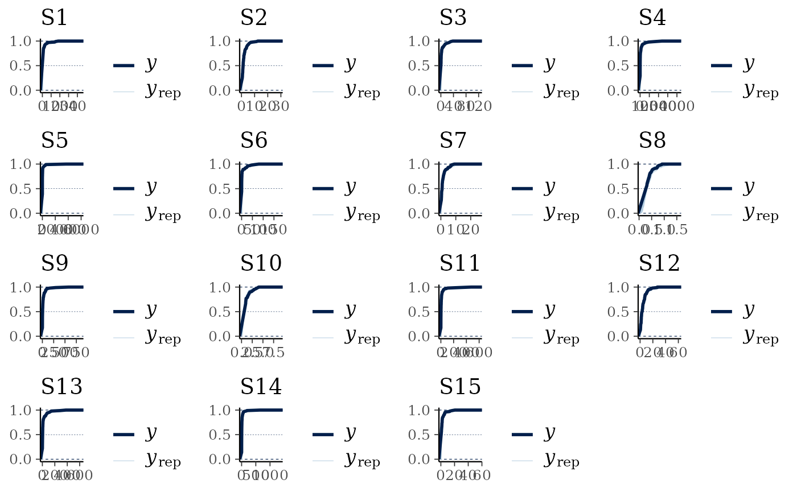
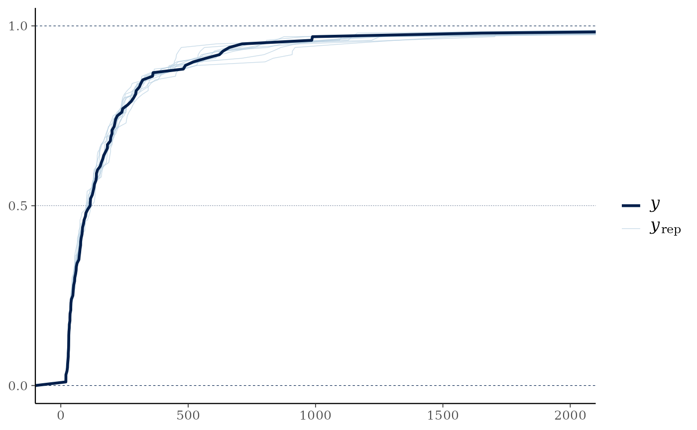
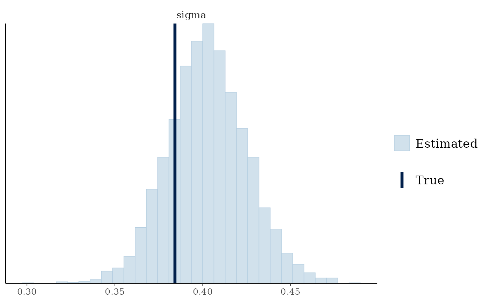
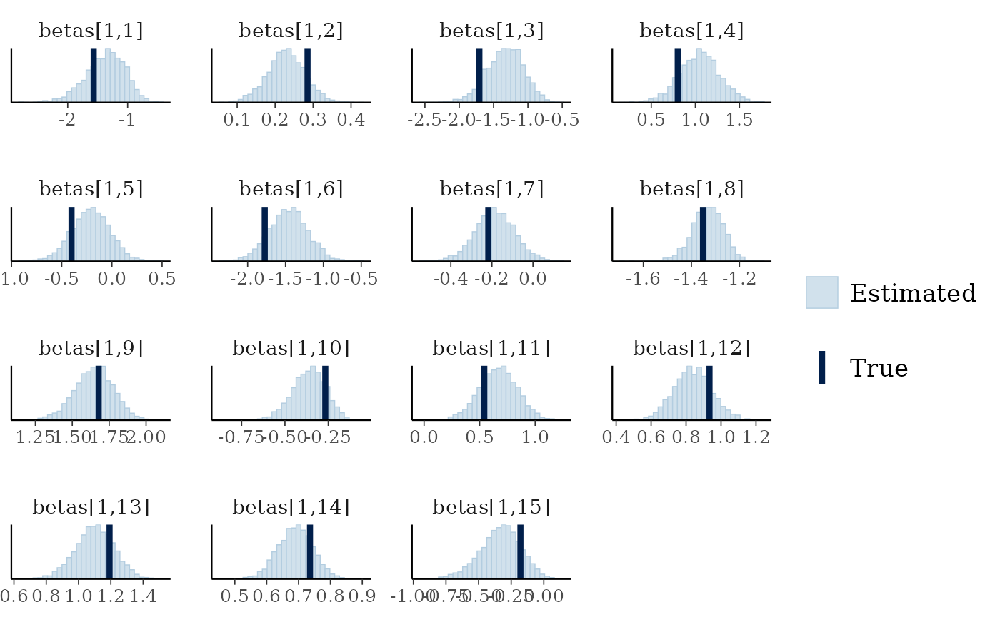
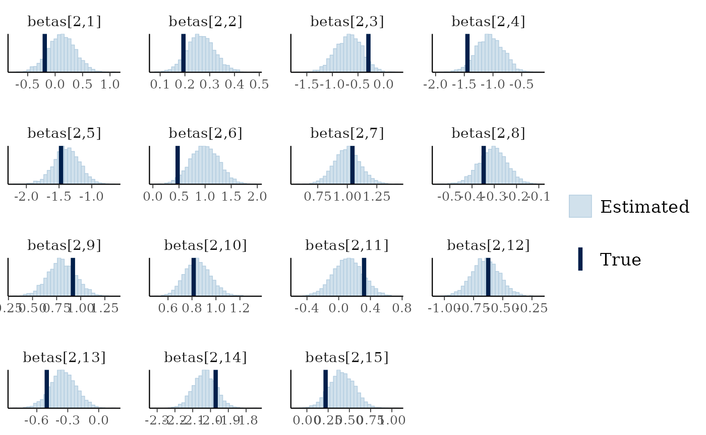
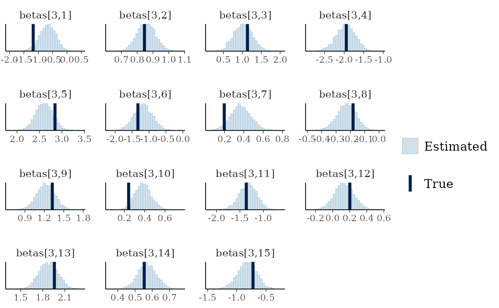
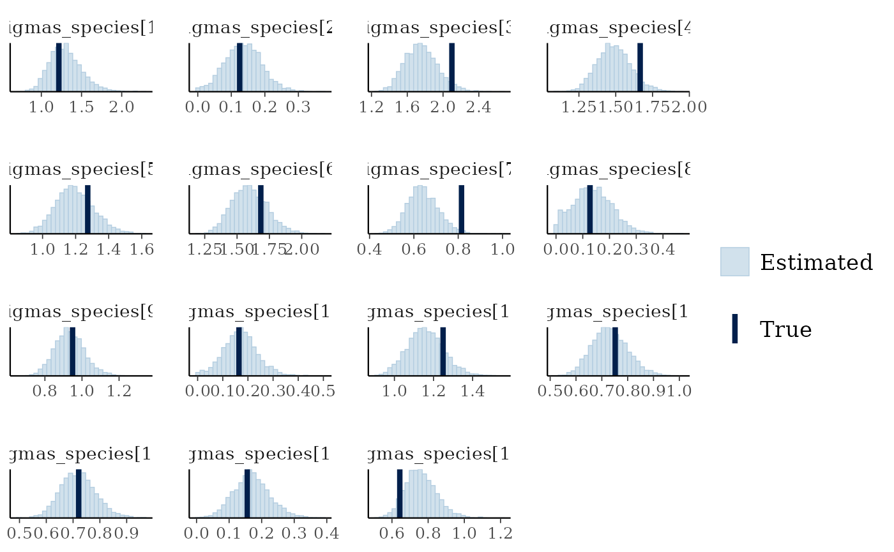

Modelling censored data
censoring.RmdCensored data occurs where the observation falls either below or above some limit of detection. When the data falls below some limit of detection this is referred to as left-censoring, while when it falls above some limit of detection it is referred to as right-censoring. Interval censoring occurs when you know the upper and lower limit of the datapoint but not the actual value.
The jsdmstan package supports left-censoring in three
families, the Gaussian (or normal) distribution , the lognormal
distribution and the gamma distribution. Data can be simulated with
left-censoring, which will return both the censored and uncensored
response matrix. For fitting censored models, jsdmstan requires a matrix
of the response plus an index matrix that says where in the matrix
censoring occurs. For left-censoring the index matrix should be 1 when
left-censored or 0 when not censored.
Example with simulated data
First, we can simulate data according to a lognormal distribution:
set.seed(430150)
cens_dat <- jsdm_sim_data(N = 100, S = 15, K = 2, method = "mglmm",
family = "lognormal", censor = "left",
censor_points = sample(seq(0.05,1,0.05), 15, replace = TRUE))We have to supply the censoring point per species to the data simulation. In this case we randomly choose those to be between 0.05 and 1.
Now we can fit the model (lowering the number of iterations to improve runtime):
cens_mod <- stan_jsdm(dat_list = cens_dat, family = "lognormal", method = "mglmm",
censoring = "left", iter = 2000,
control = list(adapt_delta = 0.9))
#>
#> SAMPLING FOR MODEL 'anon_model' NOW (CHAIN 1).
#> Chain 1:
#> Chain 1: Gradient evaluation took 0.000433 seconds
#> Chain 1: 1000 transitions using 10 leapfrog steps per transition would take 4.33 seconds.
#> Chain 1: Adjust your expectations accordingly!
#> Chain 1:
#> Chain 1:
#> Chain 1: Iteration: 1 / 2000 [ 0%] (Warmup)
#> Chain 1: Iteration: 200 / 2000 [ 10%] (Warmup)
#> Chain 1: Iteration: 400 / 2000 [ 20%] (Warmup)
#> Chain 1: Iteration: 600 / 2000 [ 30%] (Warmup)
#> Chain 1: Iteration: 800 / 2000 [ 40%] (Warmup)
#> Chain 1: Iteration: 1000 / 2000 [ 50%] (Warmup)
#> Chain 1: Iteration: 1001 / 2000 [ 50%] (Sampling)
#> Chain 1: Iteration: 1200 / 2000 [ 60%] (Sampling)
#> Chain 1: Iteration: 1400 / 2000 [ 70%] (Sampling)
#> Chain 1: Iteration: 1600 / 2000 [ 80%] (Sampling)
#> Chain 1: Iteration: 1800 / 2000 [ 90%] (Sampling)
#> Chain 1: Iteration: 2000 / 2000 [100%] (Sampling)
#> Chain 1:
#> Chain 1: Elapsed Time: 35.032 seconds (Warm-up)
#> Chain 1: 27.842 seconds (Sampling)
#> Chain 1: 62.874 seconds (Total)
#> Chain 1:
#>
#> SAMPLING FOR MODEL 'anon_model' NOW (CHAIN 2).
#> Chain 2:
#> Chain 2: Gradient evaluation took 0.000259 seconds
#> Chain 2: 1000 transitions using 10 leapfrog steps per transition would take 2.59 seconds.
#> Chain 2: Adjust your expectations accordingly!
#> Chain 2:
#> Chain 2:
#> Chain 2: Iteration: 1 / 2000 [ 0%] (Warmup)
#> Chain 2: Iteration: 200 / 2000 [ 10%] (Warmup)
#> Chain 2: Iteration: 400 / 2000 [ 20%] (Warmup)
#> Chain 2: Iteration: 600 / 2000 [ 30%] (Warmup)
#> Chain 2: Iteration: 800 / 2000 [ 40%] (Warmup)
#> Chain 2: Iteration: 1000 / 2000 [ 50%] (Warmup)
#> Chain 2: Iteration: 1001 / 2000 [ 50%] (Sampling)
#> Chain 2: Iteration: 1200 / 2000 [ 60%] (Sampling)
#> Chain 2: Iteration: 1400 / 2000 [ 70%] (Sampling)
#> Chain 2: Iteration: 1600 / 2000 [ 80%] (Sampling)
#> Chain 2: Iteration: 1800 / 2000 [ 90%] (Sampling)
#> Chain 2: Iteration: 2000 / 2000 [100%] (Sampling)
#> Chain 2:
#> Chain 2: Elapsed Time: 35.053 seconds (Warm-up)
#> Chain 2: 27.955 seconds (Sampling)
#> Chain 2: 63.008 seconds (Total)
#> Chain 2:
#>
#> SAMPLING FOR MODEL 'anon_model' NOW (CHAIN 3).
#> Chain 3:
#> Chain 3: Gradient evaluation took 0.000259 seconds
#> Chain 3: 1000 transitions using 10 leapfrog steps per transition would take 2.59 seconds.
#> Chain 3: Adjust your expectations accordingly!
#> Chain 3:
#> Chain 3:
#> Chain 3: Iteration: 1 / 2000 [ 0%] (Warmup)
#> Chain 3: Iteration: 200 / 2000 [ 10%] (Warmup)
#> Chain 3: Iteration: 400 / 2000 [ 20%] (Warmup)
#> Chain 3: Iteration: 600 / 2000 [ 30%] (Warmup)
#> Chain 3: Iteration: 800 / 2000 [ 40%] (Warmup)
#> Chain 3: Iteration: 1000 / 2000 [ 50%] (Warmup)
#> Chain 3: Iteration: 1001 / 2000 [ 50%] (Sampling)
#> Chain 3: Iteration: 1200 / 2000 [ 60%] (Sampling)
#> Chain 3: Iteration: 1400 / 2000 [ 70%] (Sampling)
#> Chain 3: Iteration: 1600 / 2000 [ 80%] (Sampling)
#> Chain 3: Iteration: 1800 / 2000 [ 90%] (Sampling)
#> Chain 3: Iteration: 2000 / 2000 [100%] (Sampling)
#> Chain 3:
#> Chain 3: Elapsed Time: 34.748 seconds (Warm-up)
#> Chain 3: 27.904 seconds (Sampling)
#> Chain 3: 62.652 seconds (Total)
#> Chain 3:
#>
#> SAMPLING FOR MODEL 'anon_model' NOW (CHAIN 4).
#> Chain 4:
#> Chain 4: Gradient evaluation took 0.000245 seconds
#> Chain 4: 1000 transitions using 10 leapfrog steps per transition would take 2.45 seconds.
#> Chain 4: Adjust your expectations accordingly!
#> Chain 4:
#> Chain 4:
#> Chain 4: Iteration: 1 / 2000 [ 0%] (Warmup)
#> Chain 4: Iteration: 200 / 2000 [ 10%] (Warmup)
#> Chain 4: Iteration: 400 / 2000 [ 20%] (Warmup)
#> Chain 4: Iteration: 600 / 2000 [ 30%] (Warmup)
#> Chain 4: Iteration: 800 / 2000 [ 40%] (Warmup)
#> Chain 4: Iteration: 1000 / 2000 [ 50%] (Warmup)
#> Chain 4: Iteration: 1001 / 2000 [ 50%] (Sampling)
#> Chain 4: Iteration: 1200 / 2000 [ 60%] (Sampling)
#> Chain 4: Iteration: 1400 / 2000 [ 70%] (Sampling)
#> Chain 4: Iteration: 1600 / 2000 [ 80%] (Sampling)
#> Chain 4: Iteration: 1800 / 2000 [ 90%] (Sampling)
#> Chain 4: Iteration: 2000 / 2000 [100%] (Sampling)
#> Chain 4:
#> Chain 4: Elapsed Time: 34.139 seconds (Warm-up)
#> Chain 4: 27.826 seconds (Sampling)
#> Chain 4: 61.965 seconds (Total)
#> Chain 4:
#> Warning: Bulk Effective Samples Size (ESS) is too low, indicating posterior means and medians may be unreliable.
#> Running the chains for more iterations may help. See
#> https://mc-stan.org/misc/warnings.html#bulk-ess
#> Warning: Tail Effective Samples Size (ESS) is too low, indicating posterior variances and tail quantiles may be unreliable.
#> Running the chains for more iterations may help. See
#> https://mc-stan.org/misc/warnings.html#tail-ess
cens_mod
#> Family: lognormal
#> With parameters: sigma
#> Model type: mglmm
#> Number of species: 15
#> Number of sites: 100
#> Number of predictors: 0
#>
#> Model run on 4 chains with 2000 iterations per chain (1000 warmup).
#>
#> No parameters with Rhat > 1.01 or Neff/N < 0.05No warnings are returned, or anything particularly concerning in terms of rhat or neff.
Now we can look at the data recovery, specifically comparing the empirical cumulative distribution function of the data to a random subset of model draws. The empirical CDF estimates deal better with the censoring in the original data as opposed to the default smoothed density kernel estimation.
multi_pp_check(cens_mod, plotfun = "ecdf_overlay")
#> Using 10 posterior draws for ppc plot type 'ppc_ecdf_overlay' by default.
We can see that the data are always nested within the model predictions (with the exception of the initial jumps due to the censoring, visible as the straight lines), indicating a reasonable fit to the data.
pp_check(cens_mod, plotfun="ecdf_overlay") +
ggplot2::coord_cartesian(xlim=c(0,2000))
#> Using 10 posterior draws for ppc plot type 'ppc_ecdf_overlay' by default.
In this case the distribution of the overall predicted sum across all variables per site is relatively similar between the raw data and the model estimates, but in cases where more of the data is censored or just above the censoring limit this would not necessarily be true in a well-fitted model.
We can also see if the model did well at recovering the parameters used within the data simulation:
mcmc_plot(cens_mod, plotfun = "recover_hist", pars = "sigma",
true = cens_dat$pars$sigma)
#> `stat_bin()` using `bins = 30`. Pick better value `binwidth`.
mcmc_plot(cens_mod, plotfun = "recover_hist", pars = paste0("betas[1,",1:15,"]"),
true = cens_dat$pars$betas[1,])
#> `stat_bin()` using `bins = 30`. Pick better value `binwidth`.
mcmc_plot(cens_mod, plotfun = "recover_hist", pars = paste0("betas[2,",1:15,"]"),
true = cens_dat$pars$betas[2,])
#> `stat_bin()` using `bins = 30`. Pick better value `binwidth`.
mcmc_plot(cens_mod, plotfun = "recover_hist", pars = paste0("betas[3,",1:15,"]"),
true = cens_dat$pars$betas[3,])
#> `stat_bin()` using `bins = 30`. Pick better value `binwidth`.
mcmc_plot(cens_mod, plotfun = "recover_hist", pars = paste0("sigmas_species[",1:15,"]"),
true = cens_dat$pars$sigmas_species)
#> `stat_bin()` using `bins = 30`. Pick better value `binwidth`.
Overall the model has performed well at recovering the various parameters.